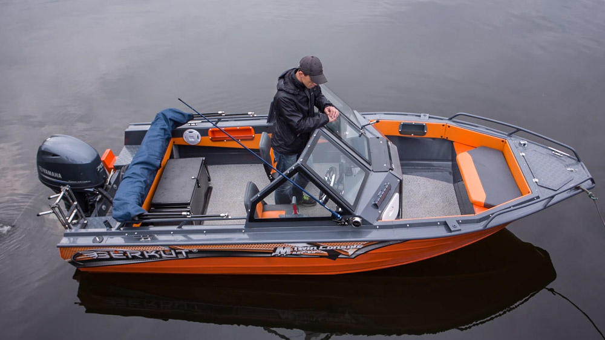

Катер Berkut M-TwinConsole (Беркут M-TwinConsole)
Катер Беркут M-TwinConsole — это модель 2015 года. Он обладает высокой комфортабельностью и обитаемостью в сочетании с безопасностью и практичностью. Хороший дизайн, а также применение современных материалов выгодно отличает данную модель среди схожих по размерам катеров, которые вы встретите на воде. На этой модели вы можете смело отправляться как на рыбалку, так и в путешествие по самым красивым и отдаленным местам мелких и крупных рек, водохранилищ и озер, а также морских разливов.
Катер BERKUT M-TwinConsole великолепно подходит для отличного прохождения по волнам. Катер BERKUT M-TwinConsole хорошо держится на воде и может выдержать самые жёсткие удары волн по корпусу. Поэтому, прежде всего здесь ценится комфорт, поскольку вам ни на секунду не покажется, что катер может потерять устойчивость и перевернуться. Наоборот, BERKUT M-TwinConsole превосходно стоит на воде, даже в неблогоприятную погоду сопровождающуюся высокими волнами.
Алюминиевый катер BERKUT M-TwinConsole - это универсальная средство передвижения по воде. Катер отлично ведет себя практически в любых ситуациях, тем не менее, особого внимания катер удостоился среди рыбаков и охотников. Алюминиевый катер BERKUT M-TwinConsole прежде всего ценится за свою высокую надёжность, универсальность и непотопляемость. Обладает катер и очень высокой маневренностью.
Технические характеристики катера:
| Параметр | Berkut M-TwinConsole |
|
Длина корпуса |
4.6 м |
|
Габаритная длина |
4.7 м |
|
Максимальная ширина |
1.9 м |
|
Высота борта на миделе |
0.92 м |
|
Минимальная высота |
0.44 м |
|
Килеватость на транце |
18° |
|
Грузоподъемность (с учетом мотора) |
500 кг |
|
Пассажировместимость |
5 чел |
|
Сухой вес |
350 кг |
|
Высота стандартного транца |
0,51 м |
|
Рекоменд. мощность мотора |
40 - 70 л.с. |
|
Толщина днища |
3 мм |
|
Толщина борта |
3 мм |
|
Максимальная масса мотора |
162 кг |
|
Расчетная высота волны |
0,8 м |
Стандартное оборудование:
- Сварной, запененный корпус;
- Пайолы из ламинированой фанеры с резиновой окантовкой;
- Порошковая покраска корпуса цветом RAL 9007;
- Алюминевые сварные консоли капитана/пассажира;
- Электроподготовка(Предохранители, проводка, ключ массы, клемы АКБ, площадка крепления АКБ);
- Остекление (Триплекс);
- Низкие носовые леера;
- Носовая банка с рундуком из алюминия с пластиковой крышкой;
- Площадка для крепления датчика эхолота;
- Комплект рулевого управления (Штурвал пластик, редуктор, штуртрос);
- Стационарный алюминиевый бак на 65 литров с датчиком уровня топлива производства США;
- Электрическая осушительная помпа, 1500 галлонов/час.;
- Два больших бардачка в кормовой части;
- Два малых бардачка в носовой части;
- Вварной якорный ящик с алюминиевой крышкой;
- Леерное ограждение кокпита;
- Дверца между консолями;
- Дверца в рамке втекла;
- Вварной держатель для наживки на дверце между консолями;
- Боксы на передней части консолей;
- Розетка прикуривателя в блоке кнопок;
- Пластиковая заливная горловина бака;
- Пластиковые петли крепления крышек и дверей;
- Блок кнопок (3 клавиши с прикуривателем);
- 2 пластиковых подстаканника в ступеньке;
- Капитанское поворотное на фирменной стойке кресло капитана;
- Капитанское на фирменной стойке кресло пассажира;
- Комбинированный ходовой, кормовой, топовый ходовые огни;
- Опциональное оснащение кормовой части кокпита;
- Открытый вещевой ящик в консоли пассажира;
- Опциональный маридек на пайолах;
- Опциональные мягкие накладки на короба бортов;
- Опциональное нескользящее покрытие на консоли;
- Опциональный звуковой сигнал;
- Опциональный комплект мягких накладок на носовую банку;
- Опциональный доптранец;
- Опциональный сварной алюминиевый трап;
Межнаборное пространство заполняется полиуретановыми блоками плавучести общим объемом около 500 литров. Это обеспечивает положительную плавучесть, шумоизоляцию и прочность, т. е. при заполнении катера забортной водой, он останется на плаву и не утонет. Бортовая линия усилена привальным брусом. Катер Беркут M-TwinConsole легко идет по воде (выходит на глиссер), хорошо входит в повороты, не заваливается и хорошо держит курс. Мягко и без ударов проходит гребни волн, даже на полном ходу.


{kind=link}
{kind=link}
{kind=link}
{kind=link}
{kind=link}
{kind=link}
{kind=link}
{kind=link}
{kind=link}